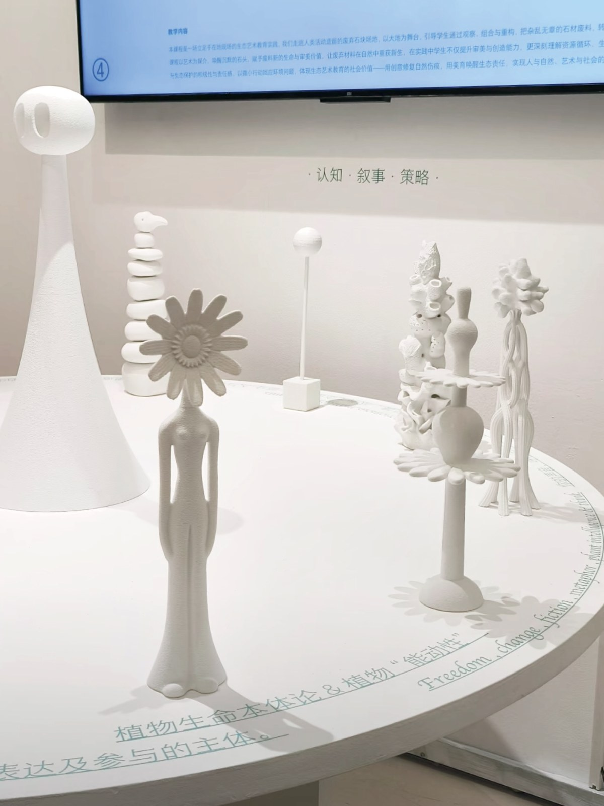
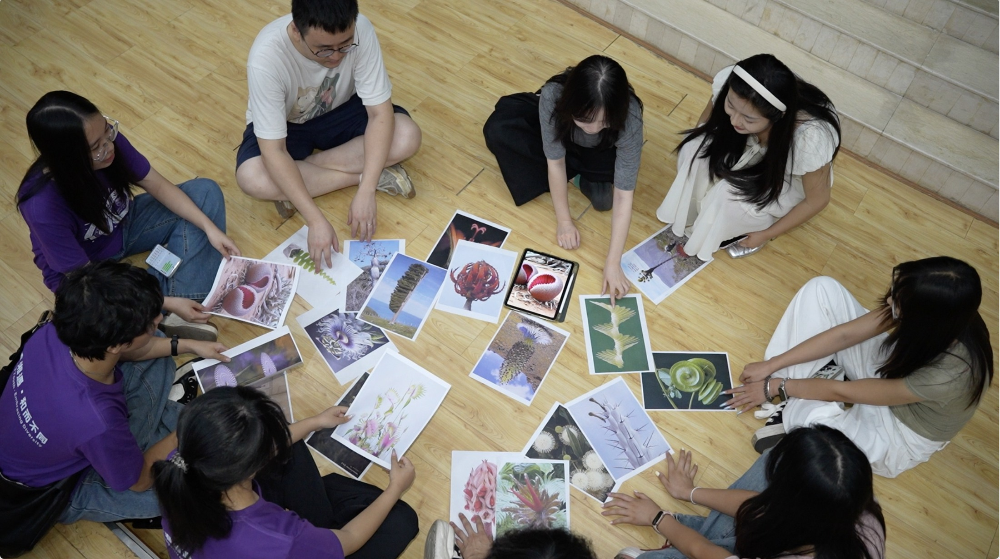
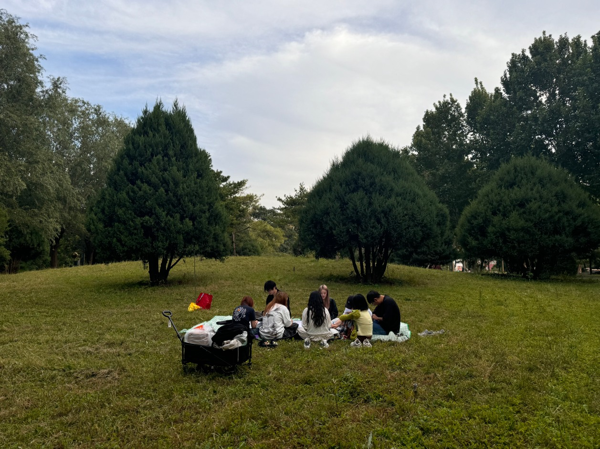
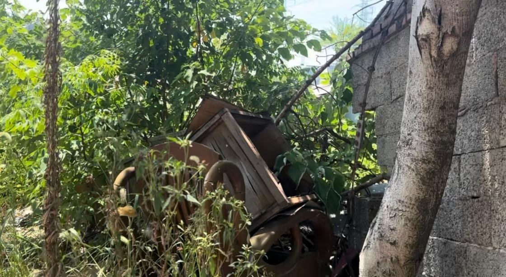
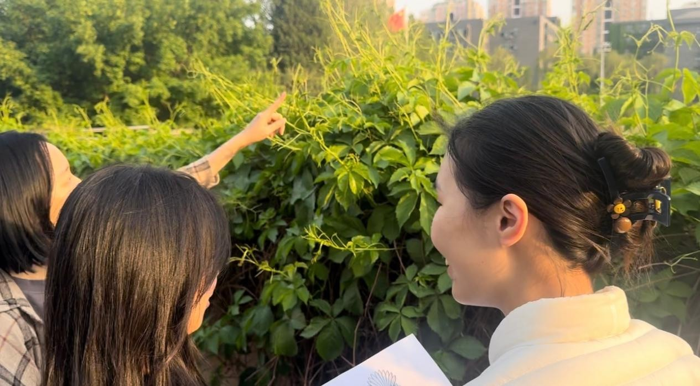
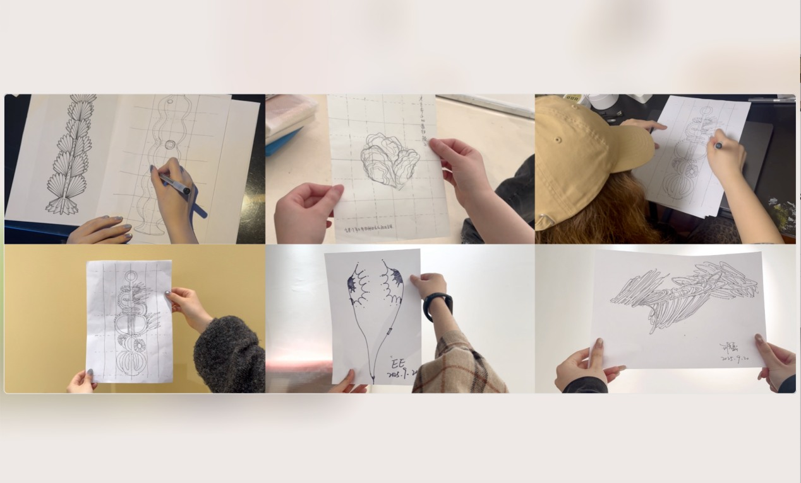
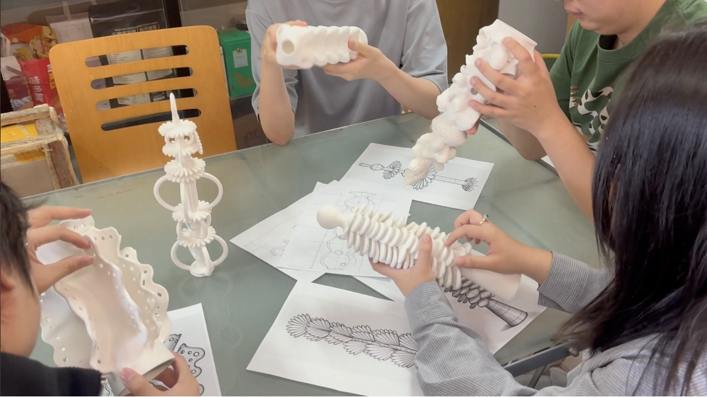
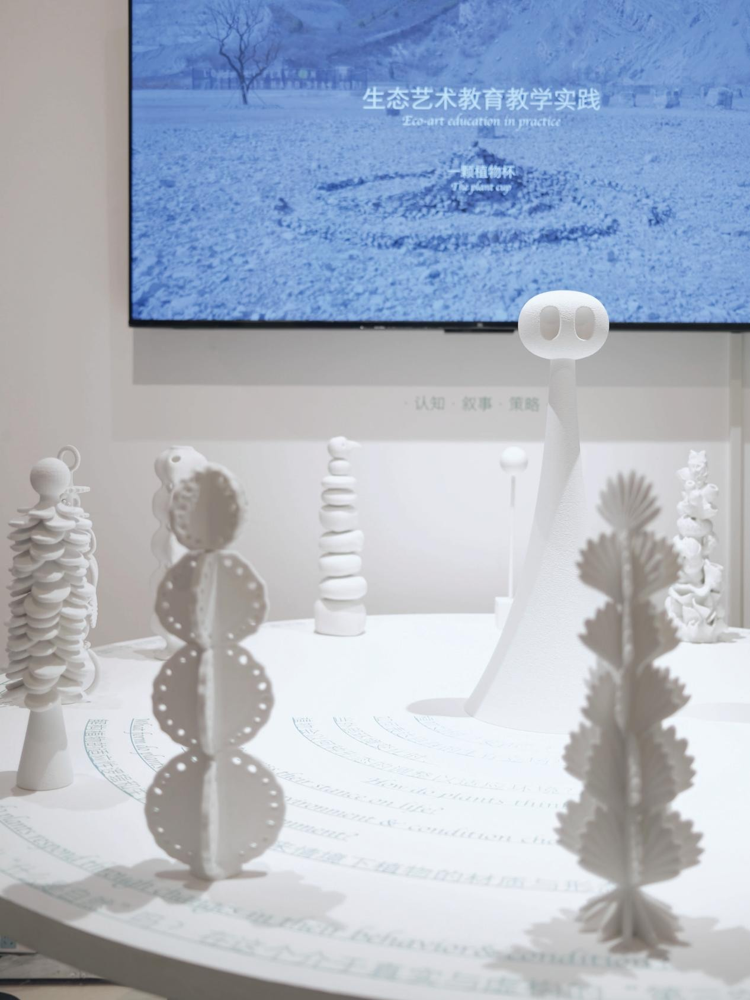
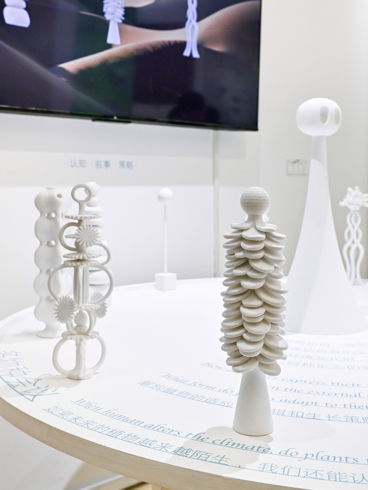

Rethinking Ecological Art Education through Plants as a Medium: A Practice-Based Study.
The Plant Cup
Learning with living plants through embodied observation, material experimentation, and collective making.
Abstract
As ecological crises intensify and sustainability becomes a shared global concern, ecological art education increasingly incorporates engagement with nature and society. Yet teaching practices can still objectify natural beings or rely on formulaic activities, reducing living organisms to visual references, symbols, or materials. Grounded in plant philosophy and the ontology of plant life, this study reviews existing approaches to ecological art education and proposes a teaching pathway that treats plants as a medium.
The study develops a model with four interconnected dimensions: pedagogical philosophy, teaching relationships, curriculum content, and practice modules. The curriculum moves through three themes: perceiving and responding to plant life signals; narrating and participating in growth processes; and observing and experiencing survival strategies. Perceptual guidance, embodied participation, and the co-creation of learning situations support sustained, multidimensional encounters with plants. The teaching practice suggests that making plants a central variable can shift learning from outcome-oriented production toward process-oriented participation, opening artistic practice to interspecies collaboration and greater sensitivity to ecological relationships.
This approach expands the possibilities of ecological art education. By attending to the agency, subjectivity, and temporality of plant life, it moves beyond human-centered observation and production toward cultural participation grounded in multispecies coexistence. It offers methodological insights for ecological art education within foundational design and contemporary art curricula, while extending the role of art education in ecological ethics and cultural transformation.
Keywords: Ecological art education; plants as a medium; teaching practice; human–nature relationships; ecological awareness

Plants as participants
What changes when plants become participants in art education? Developed through my master’s research, The Plant Cup brings plant agency, growth, and environmental adaptation into the classroom.
A curriculum of attention
I designed and led a plant-centered workshop for 20 undergraduate students. Activities moved through three themes: perceiving and responding to plant signals, participating in growth processes, and observing survival strategies. Conceptual translation, situated experiments, and outdoor practice connected these themes to art-making.
Collective making
The project brought ecological observation, material experiments, and artistic production into a shared process. Its final presentation included twelve speculative plant forms responding to social and environmental questions. These works were developed through collective practice; the photographs document the workshop and its exhibition.
Research foundation
The project accompanies my master’s thesis, Rethinking Ecological Art Education through Plants as a Medium: A Practice-Based Study. Supervisors: Qiang Yong, Sun Cong, and Fu Aichen.

Exploring questions at the beginning of the course.

Learning with plants through outdoor observation.

Exploring the boundary between plants and urban life.

Observing the growth habits of Virginia creeper.

Imagining future plant forms in relation to social issues.

Material experiments and collaborative making.

The Plant Cup, graduation exhibition.

Exhibition detail.
The final outcomes of the teaching activities were twelve speculative plant forms responding to social issues. Plants adapt their forms to changing environments. As human activities become increasingly diverse, how might plant growth change in response?